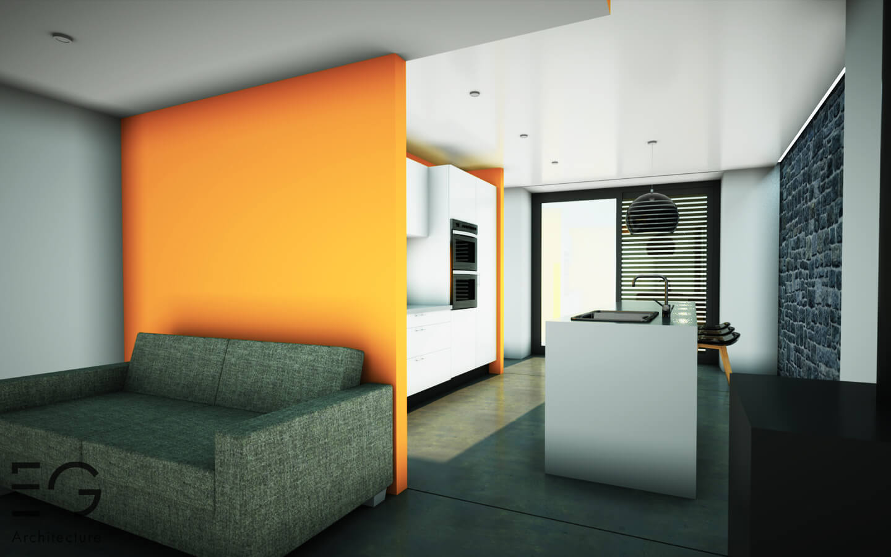
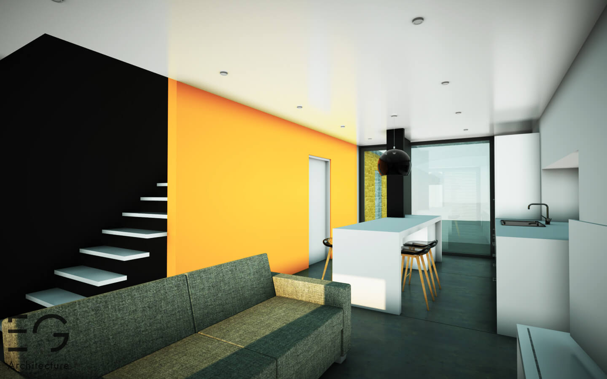
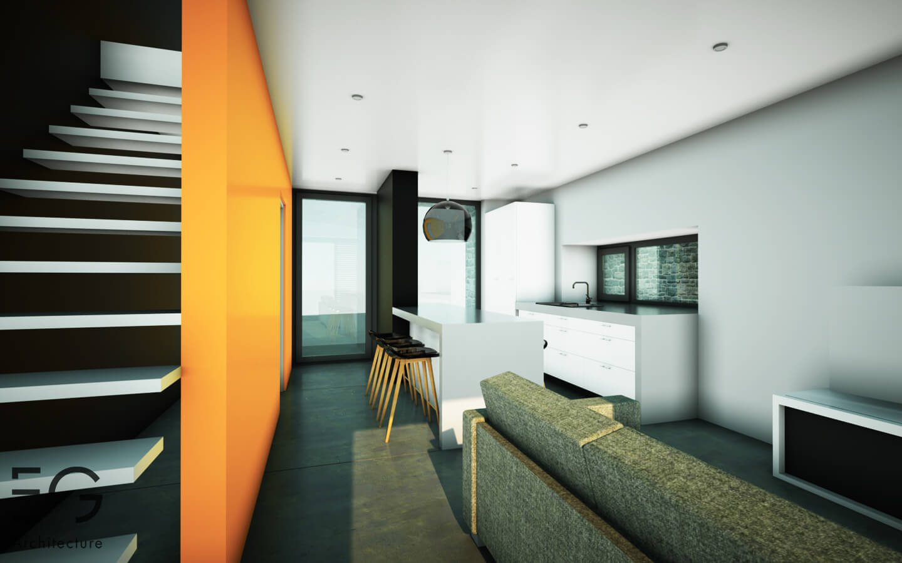

L’ancienne grange en moellons est située au centre du village d’Ocquier. L’intention des maitres de l'ouvrage est de transformer ce bâtiment, caractéristique du bâti local, en deux habitations distinctes s’étendant sur 3 niveaux.
. Chaque logement dispose d’une entrée indépendante. La complexité du projet réside dans l’aménagement des terrasses sur le terrain fortement en pente et la volonté de ne pas dénaturer le caractère fort du bâtiment existant.
  Projet précédent Projet suivant